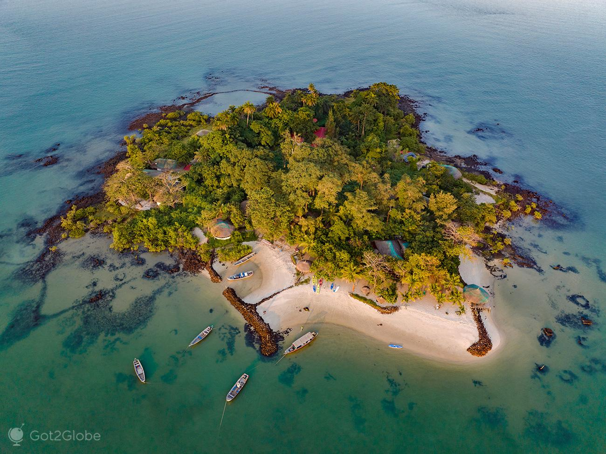

Zonas Costeiras
As zonas costeiras da Guiné-Bissau, caracterizadas por um litoral recortado com extensos manguezais, rias e o arquipélago dos Bijagós, constituem ecossistemas ricos e produtivos. Enfrentam, porém, sérias ameaças como a erosão costeira, a subida do nível do mar e a degradação ambiental, impactando comunidades locais dependentes da pesca e agricultura.

Características Principais da Costa
Arquipélago dos Bijagós: Reconhecido como reserva da biosfera, é uma das áreas naturais mais ricas da África Ocidental, com alta biodiversidade.
Litoral e RiasA costa é marcada por profundos estuários e rias, incluindo Cacheu, Mansoa, Geba, Cumbijã, Cacine e Grande de Buba.
Mangais (Manguezais): Vegetação alófila dominante nas margens, servindo como berçários de espécies marinhas e proteção natural.
Ambiente Dinâmico:Área de transição móvel, alagada e pantanosa em muitas partes.
Biodiversidade e Recursos
Fauna e Flora
Berçário para peixes, crustáceos e répteis, com destaque para a biodiversidade única do arquipélago dos Bijagós.
Potencial Económico:A região costeira é o motor da economia, focada na pesca (peixes, mariscos) e na exportação, com uma biomassa potencial significativa.
Desafios e Riscos AmbientaisErosão e Subida do Mar o avanço do mar ameaça diretamente o arquipélago dos Bijagós e assentamentos costeiros.
Degradação Ambiental:Risco para o ecossistema de mangais e perda de biodiversidade.
Vulnerabilidade Humana:Comunidades costeiras, particularmente mulheres e crianças, enfrentam riscos relacionados à escassez de água potável, degradação das áreas de cultivo de arroz e falta de transporte.
Gestão e Preservação:
 Planos de Gestão
Planos de Gestão Existem esforços de planificação da zona costeira, incluindo planos de gestão para áreas como as Ilhas Urok.
Ameaças de Desenvolvimento:
O governo busca debater os impactos da exploração desordenada dos recursos naturais.